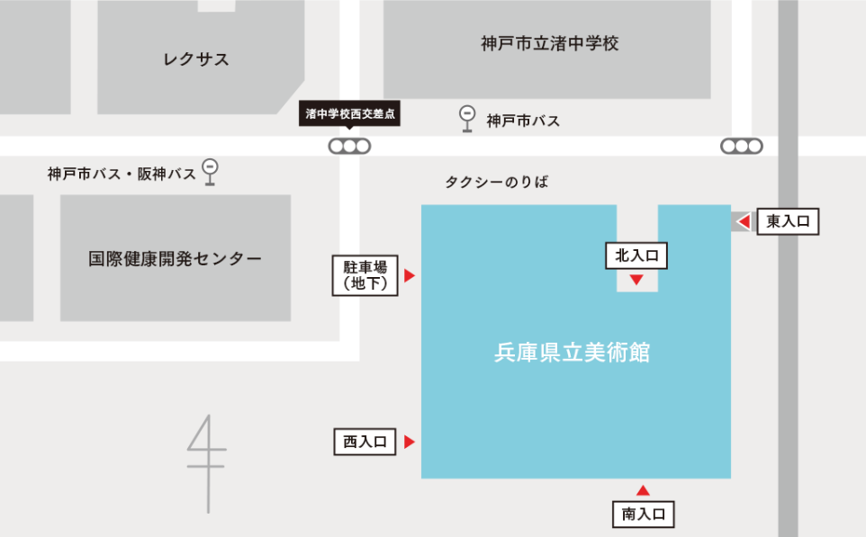

所在地
〒651-0073 神戸市中央区脇浜海岸通1-1-1(HAT神戸内)
TEL: 078-262-1011
車をご利用の場合
- 阪神高速3号神戸線「摩耶ランプ」から「摩耶ランプ南」交差点を西へ 「摩耶ランプ」からの所要時間約5分
- 国道2号線から「岩屋中町4」交差点を南へ
＜駐車場＞
- 当館駐車場は地下にございます。
- 利用時間：9:45〜19:00
- 駐車台数：乗用車80台
- 駐車料金：2時間まで400円。以降30分毎200円。（インフォメーションで割引処理をお願いします）
※周辺駐車場ご利用の場合、当館の駐車割引はございませんのでご了承願います。
美術館入口周辺MAP

バスをご利用の場合
三宮駅ターミナル前 ⇄ 県立美術館前
約15分
- 三宮駅ターミナル前から
- 県立美術館前から
- ※時間帯によっては約34分かかる場合がありますのでご注意ください
阪急王子公園 ⇄ 県立美術館前
約12分
- 阪急王子公園前から
- 県立美術館前から
- ※JR灘、阪神岩屋を経由します
- ※1時間に1本程度の運行ですのでご注意ください
電車をご利用の場合
阪神電車：岩屋駅（兵庫県立美術館前）から南へ徒歩約8分
阪急電車：神戸線王子公園駅西口から南西へ徒歩約20分